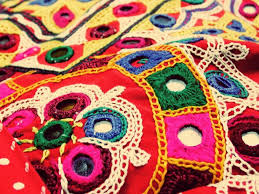
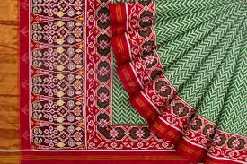
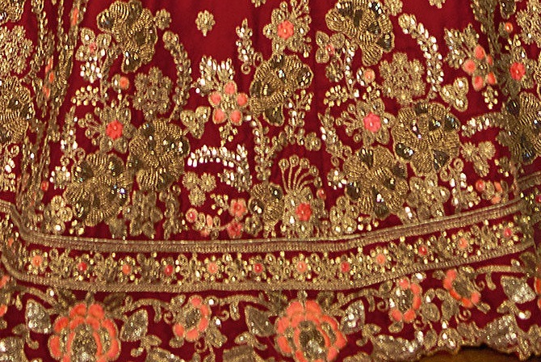
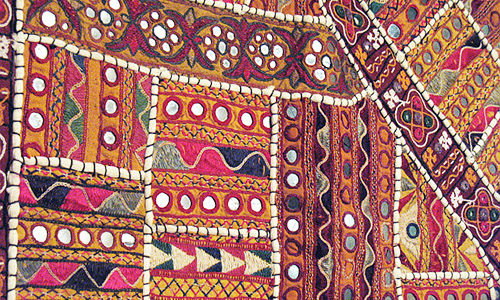

Embroidery, printing, wood carving, jewelry and stone work are most famous arts and crafts of Gujarat whose beauty is renowned worldwide. Patola silk, often termed as the queens of all silks, is used to make the finest handwoven sarees. The place associated with Patola is Patan. Here exquisite patterns are woven on sarees with great precision. The Surat based ‘zari’ industry is popular throughout the world for its embroidery work. Some of the famous patterns of embroidery which can be found here are Chalak, Salama, Kangiri and Tiki. Another popular crafts is Abhala the mirror work where small mirrors are stitched onto the fabrics to give a glittering effect to the embroidery.
   